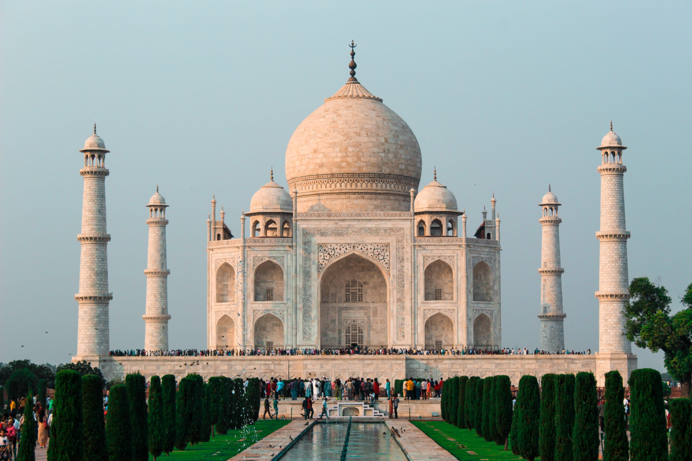

Индия
ДЕНЬ ПЯТЫЙ
Сегодня мы решили поехать в храм Акшардхам. Мне очень понравился этот храм за его красоту. Но, к сожалению, на его территории нельзя было снимать, на входе отбирали большие сумки, камеры и бутылки с водой.

|  | Индия |
|
вступление
ДЕНЬ ПЯТЫЙ Сегодня мы решили поехать в храм Акшардхам. Мне очень понравился этот храм за его красоту. Но, к сожалению, на его территории нельзя было снимать, на входе отбирали большие сумки, камеры и бутылки с водой.
|